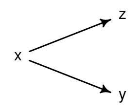
x, y and z in Case 1.Jan Vanhove
June 29, 2021
Let’s say you want to find out if a pedagogical intervention boosts learners’ conversational skills in L2 French. You’ve learnt that including a well-chosen control variable in your analysis can work wonders in terms of statistical power and precision, so you decide to administer a French vocabulary test to your participants in order to include their score on this test in your analyses as a covariate. But if you administer the vocabulary test after the intervention, it’s possible that the vocabulary scores are themselves affected by the intervention as well. If this is indeed the case, you may end up doing more harm than good. In this blog post, I will take a closer look at five general cases where controlling for such a ‘post-treatment’ variable is harmful.
In the following, x and y refer to the independent and dependent variable of interest, respectively, i.e., x would correspond to the intervention and y to the L2 French conversational skills in our example. z refers to the post-treatment variable, i.e., the French vocabulary scores in our example. x is a binary variable, y and z are continuous. Since z is a post-treatment variable, it’s possible that it is itself influenced directly or indirectly by x. In the five cases examined below, this is indeed the case.
I’ve included all R code as I think running simulations like the ones below are a useful way to learn research design and statistics. If you’re just interested in the upshot, just ignore the code snippets :)
x affects both y and z; y and z don’t affect each other.In the first case, x affects both y and z, but z and y don’t influence each other.
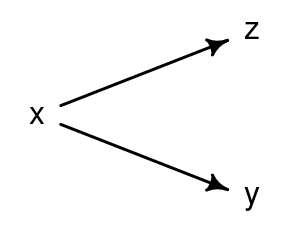
x, y and z in Case 1.In this case, controlling for z doesn’t bias the estimate for the causal influence of x on y. It does, however, reduce the precision of these estimates. To appreciate this, let’s simulate some data. The function case1() defined in the next code snippet generates a dataset corersponding to Case 1. The parameter beta_xy specifies the coefficient of the influence of x on y; the goal of the analysis is to estimate the value of this parameter from the data. The parameter beta_xz similarly specifies the coefficient of the influence of x on z. Estimating the latter coefficient isn’t a goal of the analysis, since z is merely a control variable.
case1 <- function(n_per_group, beta_xy = 1, beta_xz = 1.5) {
# Create x (n_per_group 0s and n_per_group 1s)
x <- rep(c(0, 1), each = n_per_group)
# x affects y; 'rnorm' just adds some random noise to the observations.
# In a DAG, this noise corresponds to the influence of other variables that
# didn't need to be plotted.
y <- beta_xy*x + rnorm(2*n_per_group)
# x affects z
z <- beta_xz*x + rnorm(2*n_per_group)
# Create data frame
dfr <- data.frame(x = as.factor(x), y, z)
# Add info: z above or below median?
dfr$z_split <- factor(ifelse(dfr$z > median(dfr$z), "above", "below"))
# Return data frame
dfr
}Use this function to create a dataset with 100 participants per group:
A graphical analysis that doesn’t take the control variable z into account reveals a roughly one-point difference between the two conditions, which is as it should be.
library(tidyverse)
ggplot(data = df_case1,
aes(x = x, y = y)) +
geom_boxplot(outlier.shape = NA) +
geom_point(position = position_jitter(width = 0.2), pch = 1)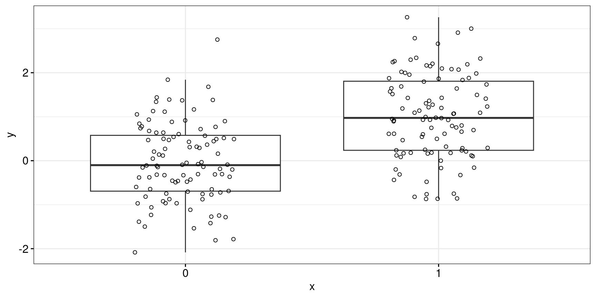
A linear model is able to retrieve the beta_xy coefficient, which was set at 1, well enough (\(\widehat{\beta_{xy}} = 1.03 \pm 0.13\)).
Estimate Std. Error t value Pr(>|t|)
(Intercept) -0.0333 0.0932 -0.357 7.21e-01
x1 1.0432 0.1319 7.911 1.77e-13Alternatively, we could analyse these data while taking the control variable into account. The graphical analysis in Figure 3 achieves this by splitting up the control variable at its median and plotting the two subset separately. This is statistically suboptimal, but it makes the visualisation easier to grok. Here we also find a roughly one-point difference between the two conditions in each panel, which suggests that controlling for z won’t induce any bias.
ggplot(data = df_case1,
aes(x = x, y = y)) +
geom_boxplot(outlier.shape = NA) +
geom_point(position = position_jitter(width = 0.2), pch = 1) +
facet_wrap(~ z_split)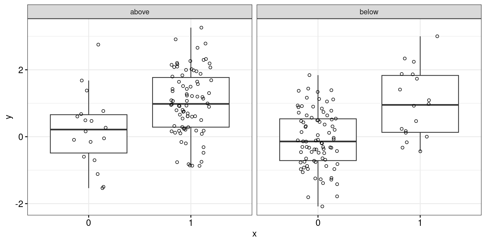
The linear model is again able to retrieve the coefficient of interest well enough (\(\widehat{\beta_{xy}} = 1.04 \pm 0.16\)), though with a slightly wider standard error.
Estimate Std. Error t value Pr(>|t|)
(Intercept) -0.0346 0.0935 -0.371 7.11e-01
x1 1.0866 0.1698 6.398 1.12e-09
z -0.0254 0.0625 -0.407 6.85e-01Of course, it’s difficult to draw any firm conclusions about the analysis of a single simulated dataset. To see that in this general case, the coefficient of interest is indeed estimated without bias but with decreased precision, let’s generate 5,000 such datasets and analyse them with and without taking the control variable into account. The function sim_case1() defined below runs these analyses; the ggplot call plots the estimates for the \(\beta_{xy}\) parameter. As the caption to Figure 4 explains, this simulation confirms what we observed above.
# Another function. This one takes the function case1(),
# runs it nruns (here: 1000) times and extracts estimates
# from two analyses per generated dataset.
sim_case1 <- function(nruns = 5000, n_per_group = 100, beta_xy = 1, beta_xz = 1.5) {
est_without <- vector("double", length = nruns)
est_with <- vector("double", length = nruns)
for (i in 1:nruns) {
# Generate data
d <- case1(n_per_group = n_per_group, beta_xy = beta_xy, beta_xz = beta_xz)
# Analyse (in regression model) without covariate and extract estimate
est_without[[i]] <- coef(lm(y ~ x, data = d))[[2]]
# Analyse with covariate, extract estimate
est_with[[i]] <- coef(lm(y ~ x + z, data = d))[[2]]
}
# Output data frame with results
results <- data.frame(
simulation = rep(1:nruns, 2),
covariate = rep(c("with covariate", "without covariate"), each = nruns),
estimate = c(est_with, est_without)
)
}
# Run function and plot results
results_sim_case1 <- sim_case1()
ggplot(data = results_sim_case1,
aes(x = estimate)) +
geom_histogram(fill = "lightgrey", colour = "black", bins = 20) +
geom_vline(xintercept = 1, linetype = "dashed") +
facet_wrap(~ covariate)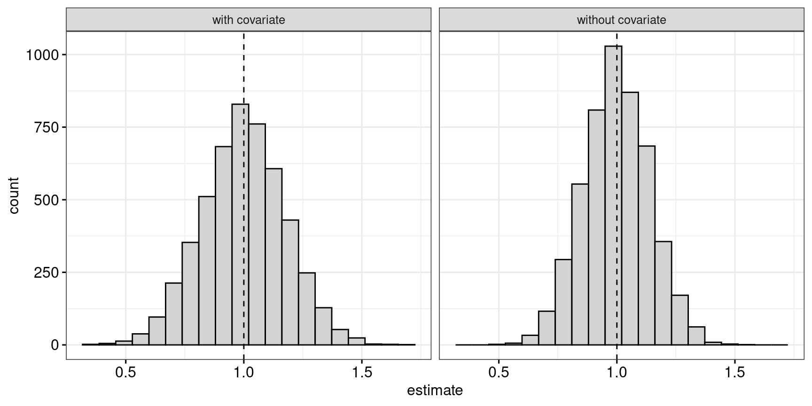
The estimate for the \(\beta_{xy}\) parameter is unbiased in both analyses, but the analysis with the covariate offers less rather than more precision: The standard deviation of the distribution of parameter estimates increases from 0.14 to 0.18:
x affects y, which in turn affects z.In the second case, x affects y directly, and y in turns affects z.
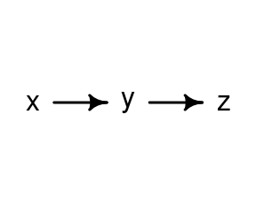
x, y and z in Case 2.This time, controlling for z biases the estimates for the \(\beta_{xy}\) parameter. To see this, let’s again simulate and analyse some data.
case2 <- function(n_per_group, beta_xy = 1, beta_yz = 1.5) {
x <- rep(c(0, 1), each = n_per_group)
y <- beta_xy*x + rnorm(2*n_per_group)
# y affects z
z <- beta_yz*y + rnorm(2*n_per_group)
dfr <- data.frame(x = as.factor(x), y, z)
dfr$z_split <- factor(ifelse(dfr$z > median(dfr$z), "above", "below"))
dfr
}
df_case2 <- case2(n_per_group = 100)When the data are analyses without taking the control variable into account, we obtain the following result:
ggplot(data = df_case2,
aes(x = x, y = y)) +
geom_boxplot(outlier.shape = NA) +
geom_point(position = position_jitter(width = 0.2), pch = 1)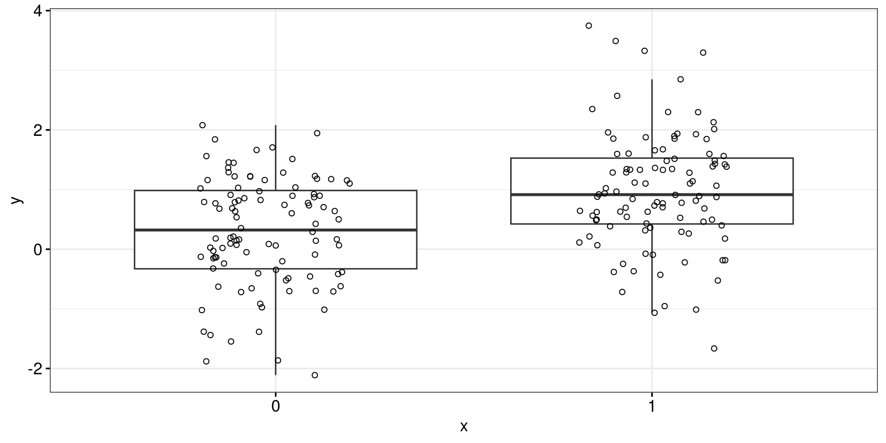
This isn’t quite as close to a one-point difference as in the previous example, but as we’ll see below that’s merely due to the randomness inherent in these simulations. The linear model yields a parameter estimate of \(\widehat{\beta_{xy}} = 0.76 \pm 0.14\).
Estimate Std. Error t value Pr(>|t|)
(Intercept) 0.295 0.095 3.11 2.15e-03
x1 0.684 0.134 5.09 8.33e-07When we take the control variable into account, however, the difference between the two groups defined by x becomes smaller:
ggplot(data = df_case2,
aes(x = x, y = y)) +
geom_boxplot(outlier.shape = NA) +
geom_point(position = position_jitter(width = 0.2), pch = 1) +
facet_wrap(~ z_split)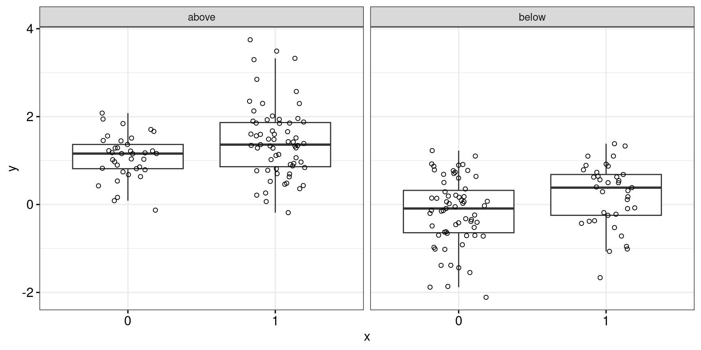
The linear model now yields a parameter estimate of \(\widehat{\beta_{xy}} = 0.18 \pm 0.08\), which is considerably farther from the actual parameter value of 1.
Estimate Std. Error t value Pr(>|t|)
(Intercept) 0.0653 0.0540 1.21 2.28e-01
x1 0.1638 0.0788 2.08 3.89e-02
z 0.4642 0.0221 21.03 3.05e-52The larger-scale simulation shows that the analysis with the covariate is indeed biased if you want to estimate the causal influence of x on y.
# Change beta_xz to beta_xy compared to the previous case
sim_case2 <- function(nruns = 5000, n_per_group = 100, beta_xy = 1, beta_yz = 1.5) {
est_without <- vector("double", length = nruns)
est_with <- vector("double", length = nruns)
for (i in 1:nruns) {
d <- case2(n_per_group = n_per_group, beta_xy = beta_xy, beta_yz = beta_yz)
est_without[[i]] <- coef(lm(y ~ x, data = d))[[2]]
est_with[[i]] <- coef(lm(y ~ x + z, data = d))[[2]]
}
results <- data.frame(
simulation = rep(1:nruns, 2),
covariate = rep(c("with covariate", "without covariate"), each = nruns),
estimate = c(est_with, est_without)
)
}
results_sim_case2 <- sim_case2()
ggplot(data = results_sim_case2,
aes(x = estimate)) +
geom_histogram(fill = "lightgrey", colour = "black", bins = 20) +
geom_vline(xintercept = 1, linetype = "dashed") +
facet_wrap(~ covariate)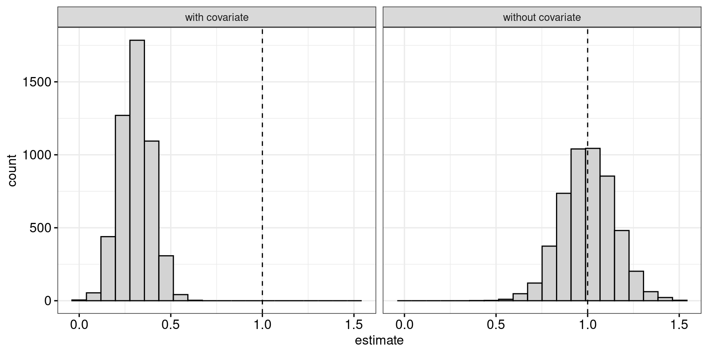
The fact that the distribution of the parameter estimates is narrower when taking the covariate into account is completely immaterial, since these estimates are estimating the wrong quantity.
x and y both affect z. x also affects y.Now z is affected by both x and y. x still affects y, though. Taking the covariate into account again yields biased estimates.
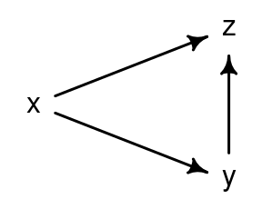
x, y and z in Case 3.Same procedure as last year, James.
case3 <- function(n_per_group, beta_xy = 1, beta_xz = 1.5, beta_yz = 1.5) {
x <- rep(c(0, 1), each = n_per_group)
y <- beta_xy*x + rnorm(2*n_per_group)
# x and y affect z
z <- beta_xz*x + beta_yz*y + rnorm(2*n_per_group)
dfr <- data.frame(x = as.factor(x), y, z)
dfr$z_split <- factor(ifelse(dfr$z > median(dfr$z), "above", "below"))
dfr
}
df_case3 <- case3(n_per_group = 100)ggplot(data = df_case3,
aes(x = x, y = y)) +
geom_boxplot(outlier.shape = NA) +
geom_point(position = position_jitter(width = 0.2), pch = 1)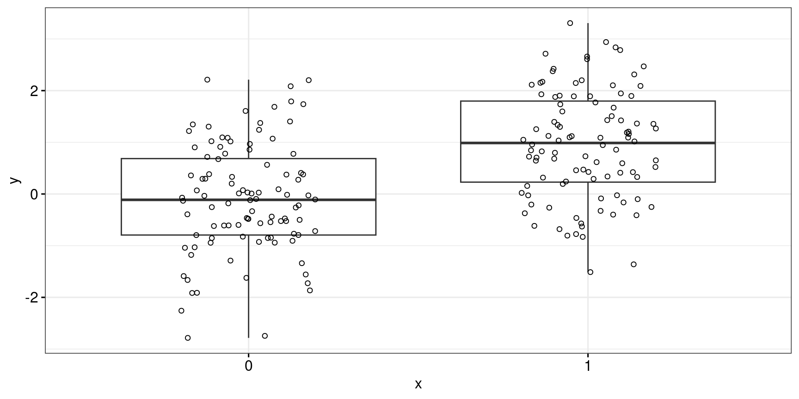
Again, the analysis without the control variable yields a reasonably accurate estimate of the true parameter value of 1 (\(\widehat{\beta_{xy}} = 1.07 \pm 0.15\)).
Estimate Std. Error t value Pr(>|t|)
(Intercept) -0.101 0.106 -0.953 3.42e-01
x1 1.047 0.150 6.992 4.07e-11When we take the control variable into account, however, the difference between the two groups defined by x becomes smaller:
ggplot(data = df_case3,
aes(x = x, y = y)) +
geom_boxplot(outlier.shape = NA) +
geom_point(position = position_jitter(width = 0.2), pch = 1) +
facet_wrap(~ z_split)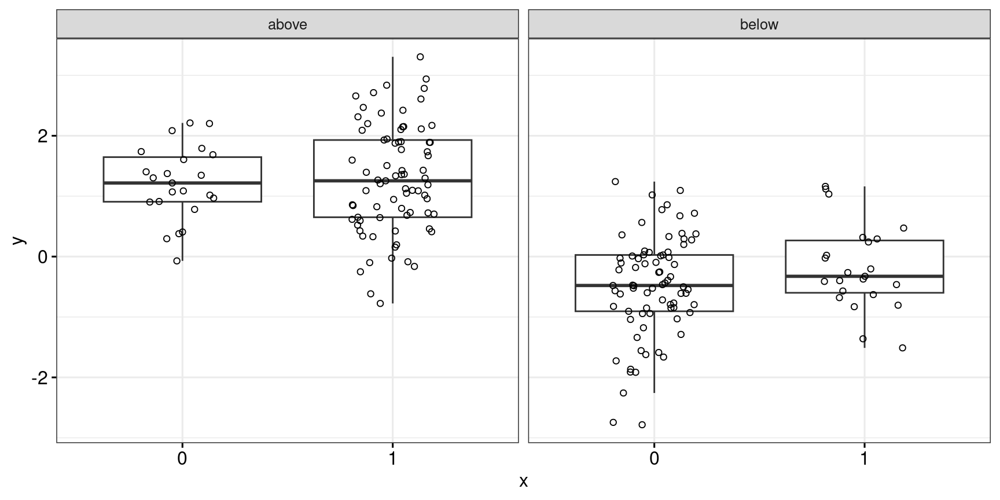
The linear model now yields a parameter estimate of \(\widehat{\beta_{xy}} = -0.31 \pm 0.11\), which is considerably farther from the actual parameter value of 1 and even has the wrong sign.
Estimate Std. Error t value Pr(>|t|)
(Intercept) 0.00596 0.0580 0.103 9.18e-01
x1 -0.31746 0.1033 -3.074 2.41e-03
z 0.46047 0.0213 21.629 6.28e-54For the sake of completeness, let’s run this simulation 5,000 times, too.
sim_case3 <- function(nruns = 5000, n_per_group = 100, beta_xy = 1, beta_xz = 1.5, beta_yz = 1.5) {
est_without <- vector("double", length = nruns)
est_with <- vector("double", length = nruns)
for (i in 1:nruns) {
d <- case3(n_per_group = n_per_group, beta_xy = beta_xy, beta_xz = beta_xz, beta_yz = beta_yz)
est_without[[i]] <- coef(lm(y ~ x, data = d))[[2]]
est_with[[i]] <- coef(lm(y ~ x + z, data = d))[[2]]
}
results <- data.frame(
simulation = rep(1:nruns, 2),
covariate = rep(c("with covariate", "without covariate"), each = nruns),
estimate = c(est_with, est_without)
)
}
results_sim_case3 <- sim_case3()
ggplot(data = results_sim_case3,
aes(x = estimate)) +
geom_histogram(fill = "lightgrey", colour = "black", bins = 20) +
geom_vline(xintercept = 1, linetype = "dashed") +
facet_wrap(~ covariate)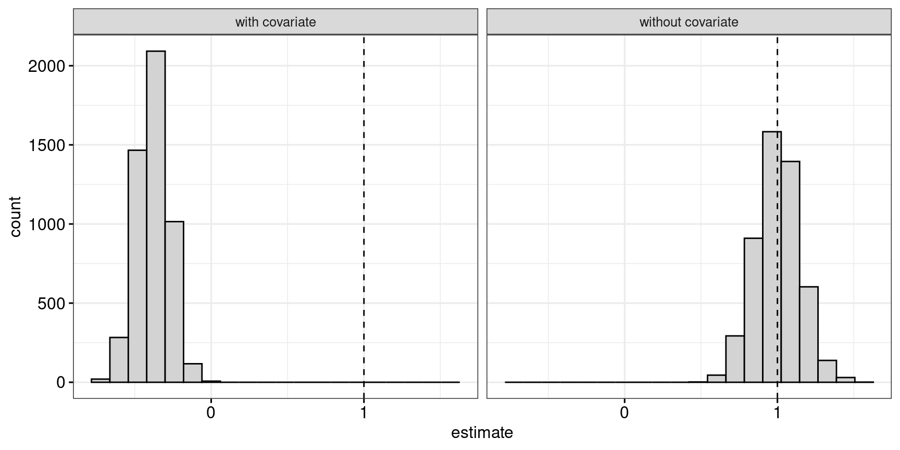
The fact that the distribution of the parameter estimates is narrower when taking the covariate into account is completely immaterial, since these estimates are estimating the wrong quantity.
x affects z; both x and z influence y.That is, x influences both y and z, but z also influences y. Let \(\beta_{xy}\) be the direct effect of x on y, \(\beta_{xz}\) the effect of x on z and \(\beta_{zy}\) the effect of z on y. Then the total effect of x on y is \(\beta_{xy} + \beta_{xz}\times\beta_{zy}\).
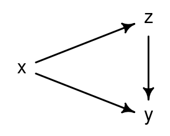
x, y and z in Case 4.Using the defaults in the following function, the total effect of x on y is \(1 + 1.5\times 0.5 = 1.75\). If this doesn’t make immediate sense, consider what a change of one unit in x causes downstream: A one-unit increase in x directly increases y by 1. It also increases z by 1.5. But a one-unit increase in z causes an increase of 0.5 in y as well, so a 1.5-unit increase in z causes an additional increase of 0.75 in y. So in total, a one-unit increase in x causes a 1.75-point increase in y.
case4 <- function(n_per_group, beta_xy = 1, beta_xz = 1.5, beta_zy = 0.5) {
x <- rep(c(0, 1), each = n_per_group)
# x affects z
z <- beta_xz*x + rnorm(2*n_per_group)
# x and z affect y
y <- beta_xy*x + beta_zy*z + rnorm(2*n_per_group)
dfr <- data.frame(x = as.factor(x), y, z)
dfr$z_split <- factor(ifelse(dfr$z > median(dfr$z), "above", "below"))
dfr
}
df_case4 <- case4(n_per_group = 100)ggplot(data = df_case4,
aes(x = x, y = y)) +
geom_boxplot(outlier.shape = NA) +
geom_point(position = position_jitter(width = 0.2), pch = 1)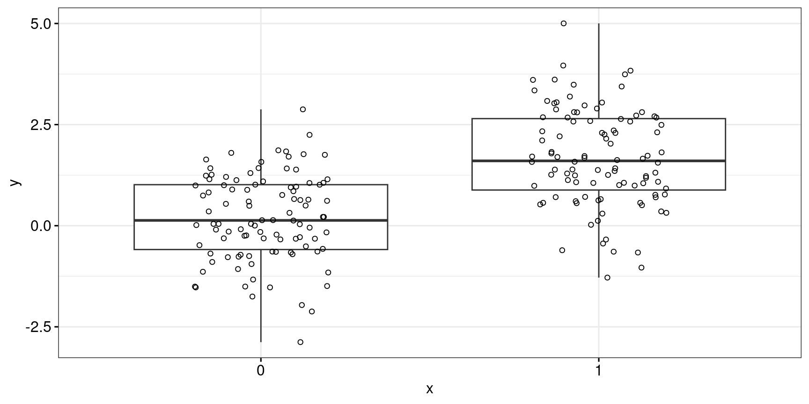
Again, the analysis without the control variable yields a reasonably accurate estimate of the true total influence of x on y of 1.75 (!) (\(\widehat{\beta_{xy}} = 1.67 \pm 0.16\)).
Estimate Std. Error t value Pr(>|t|)
(Intercept) 0.19 0.114 1.66 9.79e-02
x1 1.49 0.161 9.21 4.69e-17When we take the control variable into account, however, the difference between the two groups defined by x becomes smaller:
ggplot(data = df_case4,
aes(x = x, y = y)) +
geom_boxplot(outlier.shape = NA) +
geom_point(position = position_jitter(width = 0.2), pch = 1) +
facet_wrap(~ z_split)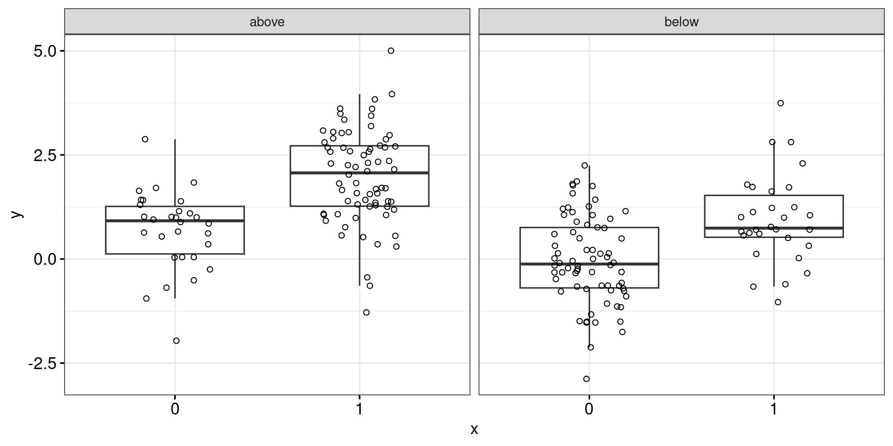
The linear model now yields a parameter estimate of \(\widehat{\beta_{xy}} = 1.11 \pm 0.17\). This analysis correctly estimates the direct effect of x on y (i.e., without the additional causal link between x on y through z). This may be interesting in its own right, but the analysis addresses a question different from `What's the causal influence ofxony`?’’
Estimate Std. Error t value Pr(>|t|)
(Intercept) 0.0464 0.1077 0.431 6.67e-01
x1 0.9863 0.1702 5.797 2.65e-08
z 0.4694 0.0777 6.041 7.52e-09For the sake of completeness, let’s run this simulation 5,000 times, too.
sim_case4 <- function(nruns = 5000, n_per_group = 100, beta_xy = 1, beta_xz = 1.5, beta_zy = 0.5) {
est_without <- vector("double", length = nruns)
est_with <- vector("double", length = nruns)
for (i in 1:nruns) {
d <- case4(n_per_group = n_per_group, beta_xy = beta_xy, beta_xz = beta_xz, beta_zy = beta_zy)
est_without[[i]] <- coef(lm(y ~ x, data = d))[[2]]
est_with[[i]] <- coef(lm(y ~ x + z, data = d))[[2]]
}
results <- data.frame(
simulation = rep(1:nruns, 2),
covariate = rep(c("with covariate", "without covariate"), each = nruns),
estimate = c(est_with, est_without)
)
}
results_sim_case4 <- sim_case4()
ggplot(data = results_sim_case4,
aes(x = estimate)) +
geom_histogram(fill = "lightgrey", colour = "black", bins = 20) +
geom_vline(xintercept = 1.75, linetype = "dashed") +
facet_wrap(~ covariate)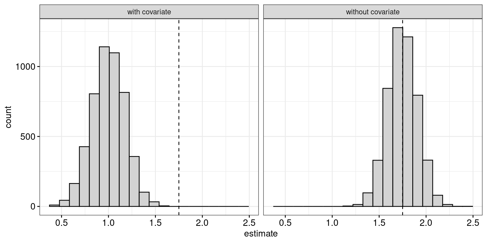
x has on y, while the analysis with the covariate correctly estimates the direct causal effect of x on y. Either may be relevant, but you have to know which!x and z affect y; x and z don’t affect each other.In the final general case, x and z both affect y, but x and z don’t affect each other. That is, z isn’t affected by the intervention in any way and so functions like a pre-treatment control variable would. The result is an increase in statistical precision. This is the only of the five cases examined in which the control variable has added value for the purposes of estimated the causal influence of x on y.
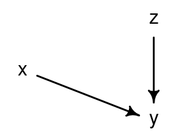
x, y and z in Case 5.Using the defaults in the following function, the total effect of x on y is \(1 + 1.5\times 0.5 = 1.75\). If this doesn’t make immediate sense, consider what a change of one unit in x causes downstream: A one-unit increase in x directly increases y by 1. It also increases z by 1.5. But a one-unit increase in z causes an increase of 0.5 in y as well, so a 1.5-unit increase in z causes an additional increase of 0.75 in y. So in total, a one-unit increase in x causes a 1.75-point increase in y.
case5 <- function(n_per_group, beta_xy = 1, beta_zy = 1.5) {
x <- rep(c(0, 1), each = n_per_group)
# Create z
z <- rnorm(2*n_per_group)
# x and z affect y
y <- beta_xy*x + beta_zy*z + rnorm(2*n_per_group)
dfr <- data.frame(x = as.factor(x), y, z)
dfr$z_split <- factor(ifelse(dfr$z > mean(dfr$z), "above", "below"))
dfr
}
df_case5 <- case5(n_per_group = 100)ggplot(data = df_case5,
aes(x = x, y = y)) +
geom_boxplot(outlier.shape = NA) +
geom_point(position = position_jitter(width = 0.2), pch = 1)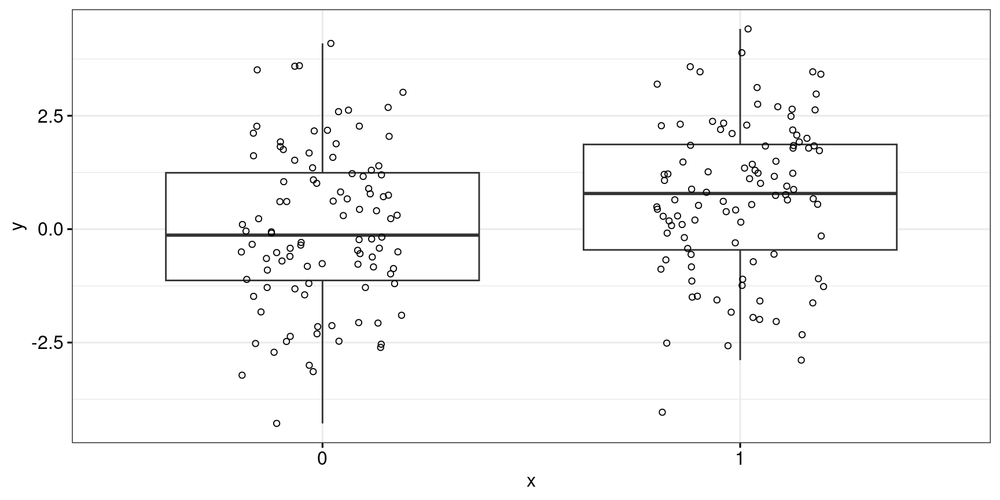
Again, the analysis without the control variable yields an estimate within one standard error of the true parameter value of 1 (\(\widehat{\beta_{xy}} = 0.76 \pm 0.24\)).
Estimate Std. Error t value Pr(>|t|)
(Intercept) 0.0201 0.172 0.117 0.9068
x1 0.6818 0.243 2.807 0.0055ggplot(data = df_case5,
aes(x = x, y = y)) +
geom_boxplot(outlier.shape = NA) +
geom_point(position = position_jitter(width = 0.2), pch = 1) +
facet_wrap(~ z_split)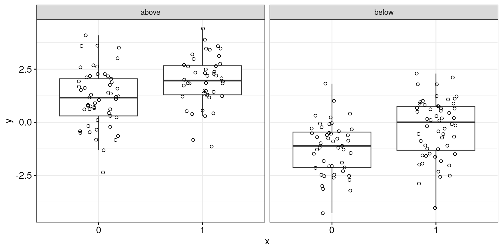
The linear model now yields a parameter estimate of \(\widehat{\beta_{xy}} = 1.08 \pm 0.15\), with is also a reasonable estimate but with a smaller standard error.
Estimate Std. Error t value Pr(>|t|)
(Intercept) -0.00183 0.1022 -0.0179 9.86e-01
x1 1.05971 0.1459 7.2626 8.62e-12
z 1.44502 0.0759 19.0298 1.67e-46For the sake of completeness, let’s run this simulation 5,000 times, too.
sim_case5 <- function(nruns = 1000, n_per_group = 100, beta_xy = 1, beta_zy = 1.5) {
est_without <- vector("double", length = nruns)
est_with <- vector("double", length = nruns)
for (i in 1:nruns) {
d <- case5(n_per_group = n_per_group, beta_xy = beta_xy, beta_zy = beta_zy)
est_without[[i]] <- coef(lm(y ~ x, data = d))[[2]]
est_with[[i]] <- coef(lm(y ~ x + z, data = d))[[2]]
}
results <- data.frame(
simulation = rep(1:nruns, 2),
covariate = rep(c("with covariate", "without covariate"), each = nruns),
estimate = c(est_with, est_without)
)
}
results_sim_case5 <- sim_case5()
ggplot(data = results_sim_case5,
aes(x = estimate)) +
geom_histogram(fill = "lightgrey", colour = "black", bins = 20) +
geom_vline(xintercept = 1, linetype = "dashed") +
facet_wrap(~ covariate)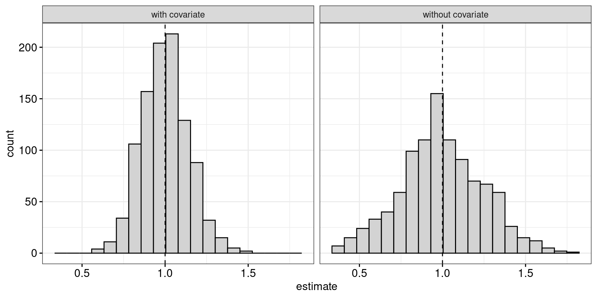
When a control variable is collected after the intervention took place, it is possible that it is directly or indirectly affected by the intervention. If this is indeed the case, including the control variable in the analysis may yield biased estimates or decrease rather than increase the precision of the estimates. In designed experiments, the solution to this problem is evident: collect the control variable before the intervention takes place. If this isn’t possible, you had better be pretty sure that the control variable isn’t a post-treatment variable. More generally, throwing predictor variables into a statistical model in the hopes that this will improve the analysis is a dreadful idea.
Please note that I reran the code on this page on August 6, 2023.
─ Session info ───────────────────────────────────────────────────────────────
setting value
version R version 4.3.1 (2023-06-16)
os Ubuntu 22.04.2 LTS
system x86_64, linux-gnu
ui X11
language en_US
collate en_US.UTF-8
ctype en_US.UTF-8
tz Europe/Zurich
date 2023-08-06
pandoc 3.1.1 @ /usr/lib/rstudio/resources/app/bin/quarto/bin/tools/ (via rmarkdown)
─ Packages ───────────────────────────────────────────────────────────────────
package * version date (UTC) lib source
abind 1.4-5 2016-07-21 [1] CRAN (R 4.3.1)
backports 1.4.1 2021-12-13 [1] CRAN (R 4.3.0)
boot 1.3-28 2021-05-03 [4] CRAN (R 4.2.0)
cachem 1.0.6 2021-08-19 [2] CRAN (R 4.2.0)
callr 3.7.3 2022-11-02 [1] CRAN (R 4.3.1)
checkmate 2.2.0 2023-04-27 [1] CRAN (R 4.3.1)
cli 3.6.1 2023-03-23 [1] CRAN (R 4.3.0)
cmdstanr * 0.6.0 2023-08-02 [1] local
coda 0.19-4 2020-09-30 [1] CRAN (R 4.3.1)
codetools 0.2-19 2023-02-01 [4] CRAN (R 4.2.2)
colorspace 2.1-0 2023-01-23 [1] CRAN (R 4.3.0)
crayon 1.5.2 2022-09-29 [1] CRAN (R 4.3.1)
curl 5.0.1 2023-06-07 [1] CRAN (R 4.3.1)
dagitty * 0.3-1 2021-01-21 [1] CRAN (R 4.3.1)
devtools 2.4.5 2022-10-11 [1] CRAN (R 4.3.1)
digest 0.6.29 2021-12-01 [2] CRAN (R 4.2.0)
distributional 0.3.2 2023-03-22 [1] CRAN (R 4.3.1)
dplyr * 1.1.2 2023-04-20 [1] CRAN (R 4.3.0)
ellipsis 0.3.2 2021-04-29 [2] CRAN (R 4.2.0)
evaluate 0.15 2022-02-18 [2] CRAN (R 4.2.0)
fansi 1.0.4 2023-01-22 [1] CRAN (R 4.3.1)
farver 2.1.1 2022-07-06 [1] CRAN (R 4.3.0)
fastmap 1.1.0 2021-01-25 [2] CRAN (R 4.2.0)
forcats * 1.0.0 2023-01-29 [1] CRAN (R 4.3.0)
fs 1.5.2 2021-12-08 [2] CRAN (R 4.2.0)
generics 0.1.3 2022-07-05 [1] CRAN (R 4.3.0)
ggplot2 * 3.4.2 2023-04-03 [1] CRAN (R 4.3.0)
glue 1.6.2 2022-02-24 [2] CRAN (R 4.2.0)
gridExtra 2.3 2017-09-09 [1] CRAN (R 4.3.0)
gtable 0.3.3 2023-03-21 [1] CRAN (R 4.3.0)
hms 1.1.3 2023-03-21 [1] CRAN (R 4.3.0)
htmltools 0.5.5 2023-03-23 [1] CRAN (R 4.3.0)
htmlwidgets 1.6.2 2023-03-17 [1] CRAN (R 4.3.1)
httpuv 1.6.11 2023-05-11 [1] CRAN (R 4.3.1)
inline 0.3.19 2021-05-31 [1] CRAN (R 4.3.1)
jsonlite 1.8.7 2023-06-29 [1] CRAN (R 4.3.1)
knitr 1.39 2022-04-26 [2] CRAN (R 4.2.0)
labeling 0.4.2 2020-10-20 [1] CRAN (R 4.3.0)
later 1.3.1 2023-05-02 [1] CRAN (R 4.3.1)
lattice 0.21-8 2023-04-05 [4] CRAN (R 4.3.0)
lifecycle 1.0.3 2022-10-07 [1] CRAN (R 4.3.0)
loo 2.6.0 2023-03-31 [1] CRAN (R 4.3.1)
lubridate * 1.9.2 2023-02-10 [1] CRAN (R 4.3.0)
magrittr 2.0.3 2022-03-30 [1] CRAN (R 4.3.0)
MASS 7.3-60 2023-05-04 [4] CRAN (R 4.3.1)
matrixStats 1.0.0 2023-06-02 [1] CRAN (R 4.3.1)
memoise 2.0.1 2021-11-26 [2] CRAN (R 4.2.0)
mime 0.10 2021-02-13 [2] CRAN (R 4.0.2)
miniUI 0.1.1.1 2018-05-18 [1] CRAN (R 4.3.1)
munsell 0.5.0 2018-06-12 [1] CRAN (R 4.3.0)
mvtnorm 1.2-2 2023-06-08 [1] CRAN (R 4.3.1)
pillar 1.9.0 2023-03-22 [1] CRAN (R 4.3.0)
pkgbuild 1.4.2 2023-06-26 [1] CRAN (R 4.3.1)
pkgconfig 2.0.3 2019-09-22 [2] CRAN (R 4.2.0)
pkgload 1.3.2.1 2023-07-08 [1] CRAN (R 4.3.1)
posterior 1.4.1 2023-03-14 [1] CRAN (R 4.3.1)
prettyunits 1.1.1 2020-01-24 [2] CRAN (R 4.2.0)
processx 3.8.2 2023-06-30 [1] CRAN (R 4.3.1)
profvis 0.3.8 2023-05-02 [1] CRAN (R 4.3.1)
promises 1.2.0.1 2021-02-11 [1] CRAN (R 4.3.1)
ps 1.7.5 2023-04-18 [1] CRAN (R 4.3.1)
purrr * 1.0.1 2023-01-10 [1] CRAN (R 4.3.0)
R6 2.5.1 2021-08-19 [2] CRAN (R 4.2.0)
Rcpp 1.0.11 2023-07-06 [1] CRAN (R 4.3.1)
RcppParallel 5.1.7 2023-02-27 [1] CRAN (R 4.3.1)
readr * 2.1.4 2023-02-10 [1] CRAN (R 4.3.0)
remotes 2.4.2 2021-11-30 [2] CRAN (R 4.2.0)
rethinking * 2.31 2023-08-02 [1] Github (rmcelreath/rethinking@2f01a9c)
rlang 1.1.1 2023-04-28 [1] CRAN (R 4.3.0)
rmarkdown 2.21 2023-03-26 [1] CRAN (R 4.3.0)
rstan * 2.26.22 2023-08-01 [1] local
rstudioapi 0.14 2022-08-22 [1] CRAN (R 4.3.0)
scales 1.2.1 2022-08-20 [1] CRAN (R 4.3.0)
sessioninfo 1.2.2 2021-12-06 [2] CRAN (R 4.2.0)
shape 1.4.6 2021-05-19 [1] CRAN (R 4.3.1)
shiny 1.7.4.1 2023-07-06 [1] CRAN (R 4.3.1)
StanHeaders * 2.26.27 2023-06-14 [1] CRAN (R 4.3.1)
stringi 1.7.12 2023-01-11 [1] CRAN (R 4.3.1)
stringr * 1.5.0 2022-12-02 [1] CRAN (R 4.3.0)
tensorA 0.36.2 2020-11-19 [1] CRAN (R 4.3.1)
tibble * 3.2.1 2023-03-20 [1] CRAN (R 4.3.0)
tidyr * 1.3.0 2023-01-24 [1] CRAN (R 4.3.0)
tidyselect 1.2.0 2022-10-10 [1] CRAN (R 4.3.0)
tidyverse * 2.0.0 2023-02-22 [1] CRAN (R 4.3.1)
timechange 0.2.0 2023-01-11 [1] CRAN (R 4.3.0)
tzdb 0.4.0 2023-05-12 [1] CRAN (R 4.3.0)
urlchecker 1.0.1 2021-11-30 [1] CRAN (R 4.3.1)
usethis 2.2.2 2023-07-06 [1] CRAN (R 4.3.1)
utf8 1.2.3 2023-01-31 [1] CRAN (R 4.3.1)
V8 4.3.0 2023-04-08 [1] CRAN (R 4.3.0)
vctrs 0.6.3 2023-06-14 [1] CRAN (R 4.3.0)
withr 2.5.0 2022-03-03 [2] CRAN (R 4.2.0)
xfun 0.39 2023-04-20 [1] CRAN (R 4.3.0)
xtable 1.8-4 2019-04-21 [1] CRAN (R 4.3.1)
yaml 2.3.5 2022-02-21 [2] CRAN (R 4.2.0)
[1] /home/jan/R/x86_64-pc-linux-gnu-library/4.3
[2] /usr/local/lib/R/site-library
[3] /usr/lib/R/site-library
[4] /usr/lib/R/library
──────────────────────────────────────────────────────────────────────────────